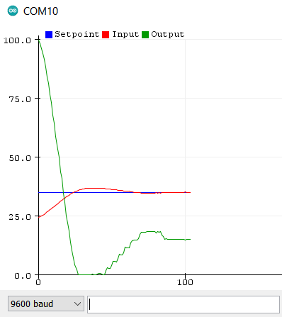

2.4. Digital controller: Arduino implementation#
This tutorial aims to implement temperature control on the µ-controller of the TCLab board. The process will be carried out in the Arduino IDE and will involve the following stages:
analysing the proposed C code
implementing the previously defined numerical PID corrector
downloading the program into the Arduino µController for real testing.
2.4.1. PID controller#
The PID corrector will take the parrallel form:
\(G_c(p)=k_p+\frac{k_i}{p}+k_d p\)
form and will be implemented as a recurrence equation:
\(o_k = o_{k-1} + k_i e_k T_s + k_p (e_k-e_{k-1}) + \frac{k_d}{T_s}(e_k+ e_{k-2}-2e_{k-1})\)
The PID algorithm functions best if it is evaluated at a regular interval but managing a call to exact timing can be complicated to implement. Instead, the sample time \(T_s\) will be calculated at each step using a millis() time measurement function, as proposed by Beauregard:
/*How long since we last calculated*/
unsigned long now = millis();
double timeChange = (double)(now - lastTime);
2.4.2. C code analysis#
We’re going to work on an Arduino code that evolves from the following code already present on the TCLab board. We want to retain the ability to communicate with the board via the USB serial port. But certain functions will evolve to enable us to include a temperature controller directly on the board, and to configure it. In particular, the following commands will be required:
Command |
Action |
|---|---|
PIDON |
PID output active |
PIDOFF |
PID output inactive |
T1ORDER float |
set Temperature T1 order. Returns T1 value in °C. |
PID_KP float |
set Kp coefficient value. |
PID_KI float |
set Ki coefficient value |
PID_KD float |
set Kd coefficient value |
PID_TS float |
define time sample value |
ECHOON |
Active echo of PID status |
ECHOOFF |
Inactive PID echo state |
Exercice: Analyze the code here. Complete certain points:
In the command management section, complete the ‘PIDON’ command processing field: declare the
PIDOnvariable as True, initialize the output and error memory variables to zero (o_k_1,e_k_1,e_k_2), and initialize thelastTimevariable to the current time (use themillis()` function), Send a response to the serial port indicating that the controller is active and recalling the corrector gain values.In the setup section, complete de PID initialisation with the following parameters: \(k_p=10.336\), \(k_i=0.063\), \(k_d=0\), a
Setpointat 35°C, initialize the output and error memory variables to zero, eclare thePIDOnvariable as False, a ‘sampleTime’ of 2000 ms.
To do this work, use the Arduino IDE 1.8 (installation link).
2.4.3. Arduino digital controller#
Exercice: Complete the
ComputePID()function of the C code with the:
Compute of error variable
e_kCompute of PID
Outputwith recurrence equationOutput variable limited to 100
Storage of certain variables for the next calculation step
2.4.4. Real tests#
Perform the following steps:
Select your board: Go to the “Tools” computer menu from the menu bar. Select the “Board” option and another menu will appear, where you’ll select your Arduino model (Leonardo) from the list.
Select your serial port: Select the serial device of the Arduino board. Go to Tools, and then the serial port menu. You might see COM3 or higher (COM1 and COM2 are usually reserved for hardware serial ports).
Upload the program: Confirm the Arduino is plugged in, and the green light is on - therefore the correct board and port is chosen. Select Upload from the Sketch drop-down menu. After a few seconds, you will get this screen, with the message “Done uploading.”
Activate the controller and allow its status to be displayed: Go to Tools, and then the serial monitor. Type
PIDONandECHOON.Visualize controller behavior graphically: Go to Tools, and then the serial plotter. The Serial Plotter is a really useful tool for tracking your variables.
Serial Plotter Tool:
